筆者今天拿到了去年參與幕資的 Librem 5 手機的開發板，因此接下來也會有一系列針對這一塊開發板的文章。
先來個開箱文吧 :)
Librem 5 是什麼?
Librem 5 是 Purism 這間專注在打造執行 GNU/Linux 的筆電、平板或是手機的硬體開發商於 2017 年幕資的手機計畫，目標是讓 GNU/Linux 可以真正的運作在手機上面，而不需要透過 Android 這種偽 Linux 作業系統才能用於手機上。
對於喜愛 GNU/Linux 的用戶而言，這是 GNU/Linux 社群再一次挑戰讓 Linux 運作在攜帶式裝置的機會。
除此之外，Librem 5 另外一個目標則是完全使用開源的軟體/韌體來運作這隻手機，也因此所有的軟體 stack，包含 GPU 驅動都會是走開源驅動來替代沒有公開程式碼的私有驅動的運作。
也因此，我們將會有一隻可以專屬於開源社群自己可以控制的手機，而不必再任由 Google 或是 Apple 這類廠商的擺佈～
因為這樣的美好願景，所以筆者自己也在幕資計畫上買了一塊 Librem 5 的開發板，好來順便玩玩 XD
開箱囉
在參與幕資的一年後，筆者終於收到了 Librem 5 的開發板，由 FEDEX 從美國送達台灣
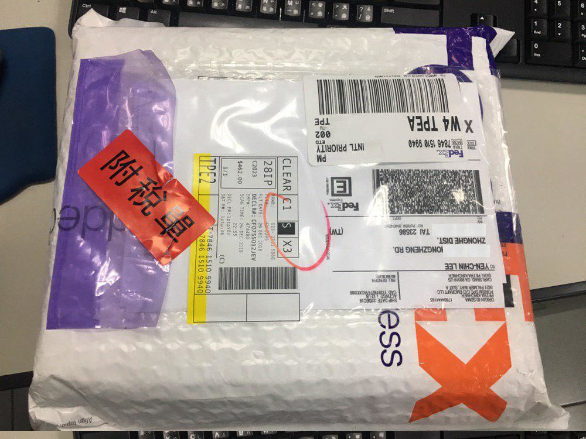
和 如何購買 Geeksphone Revolution 並寄送到台灣 一文的狀況不同，這次不需要提供 個案委託書 以及 自用切結書 給海關就可以收到東西
當然還是需要繳稅就是囉，繳交 NT $462 元給 FEDEX 的運送人員
拆掉 FEDEX 的外包裝後，是一個簡樸的箱子
正面
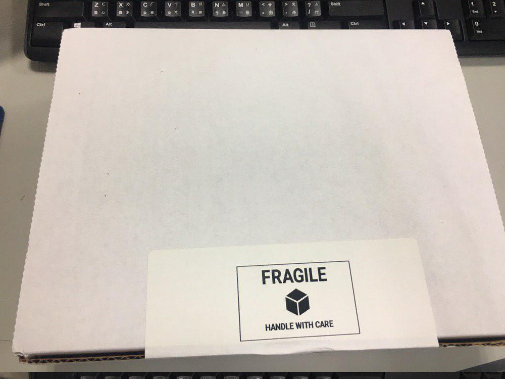
側面
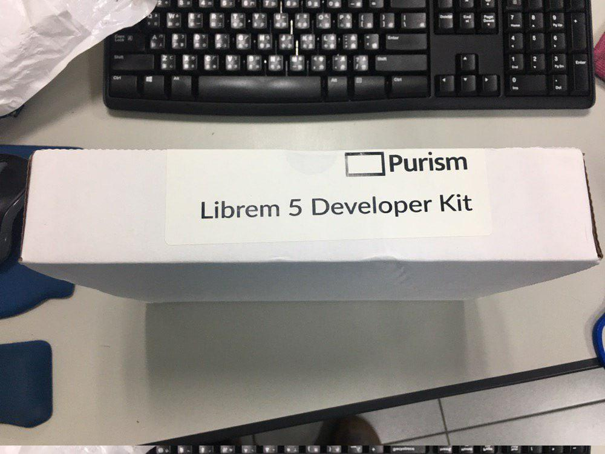
打開盒子，第一眼就是當時的購買證明 (筆者由於蠻早參與幕資計畫，因此當時價格為 $299 美元)
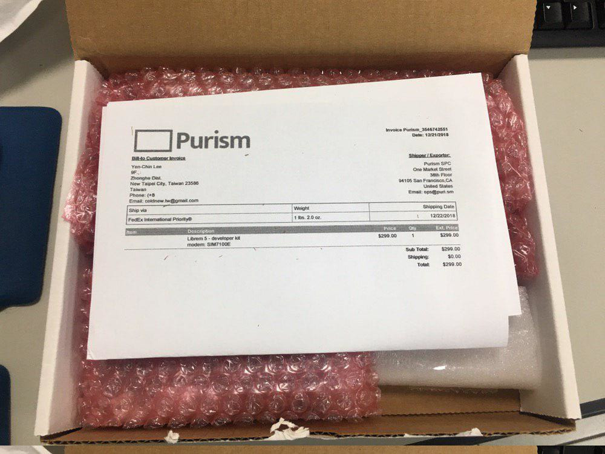
後面則是簡單的說明書，採用多面印刷
說明書
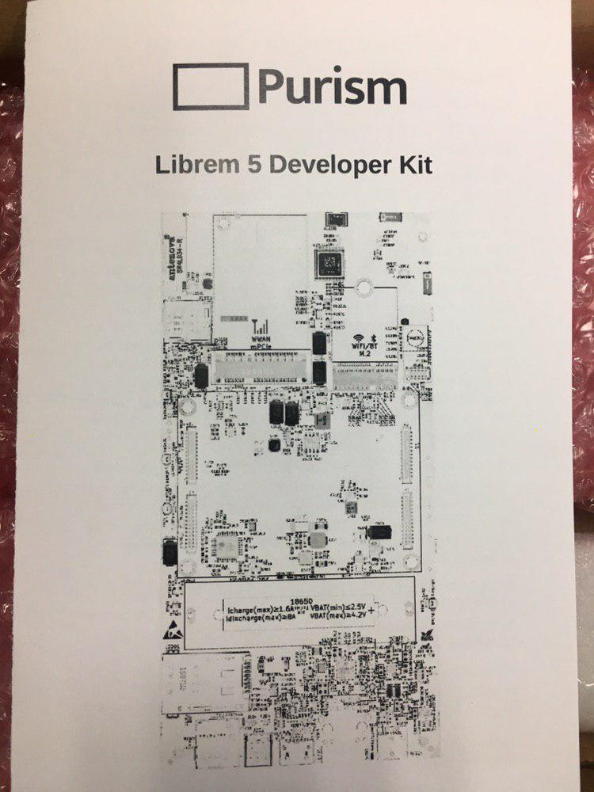
說明書
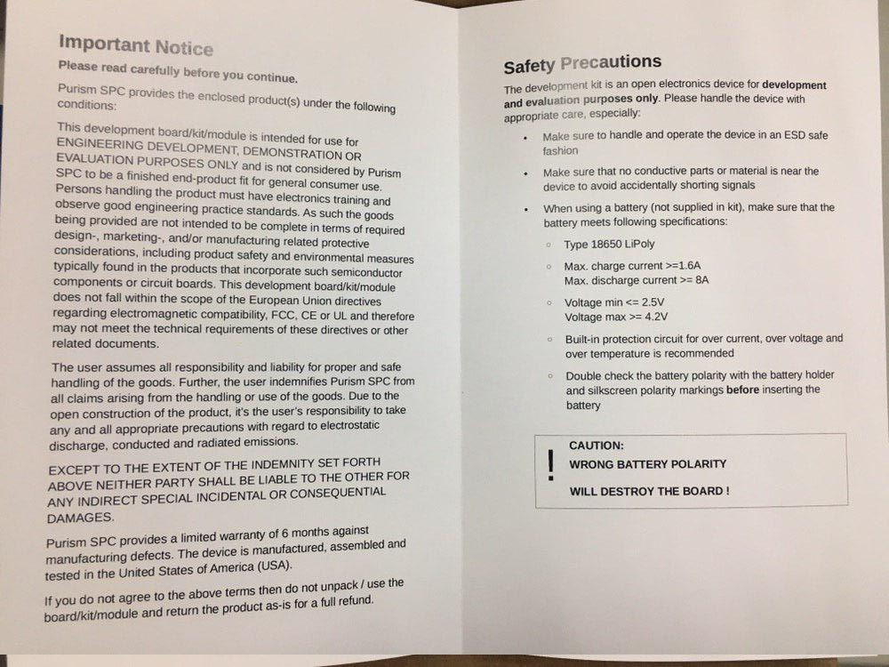
再來就是我們的板子啦，採用氣泡布包住
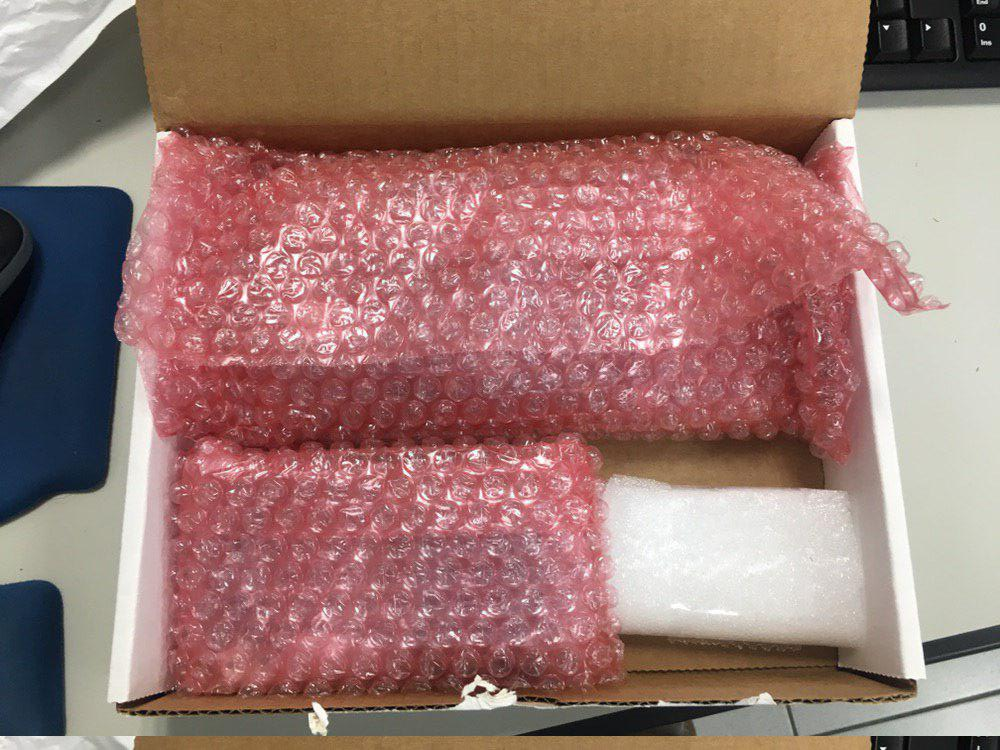
拿開氣泡布，我們的開發板終於現身拉~
正面
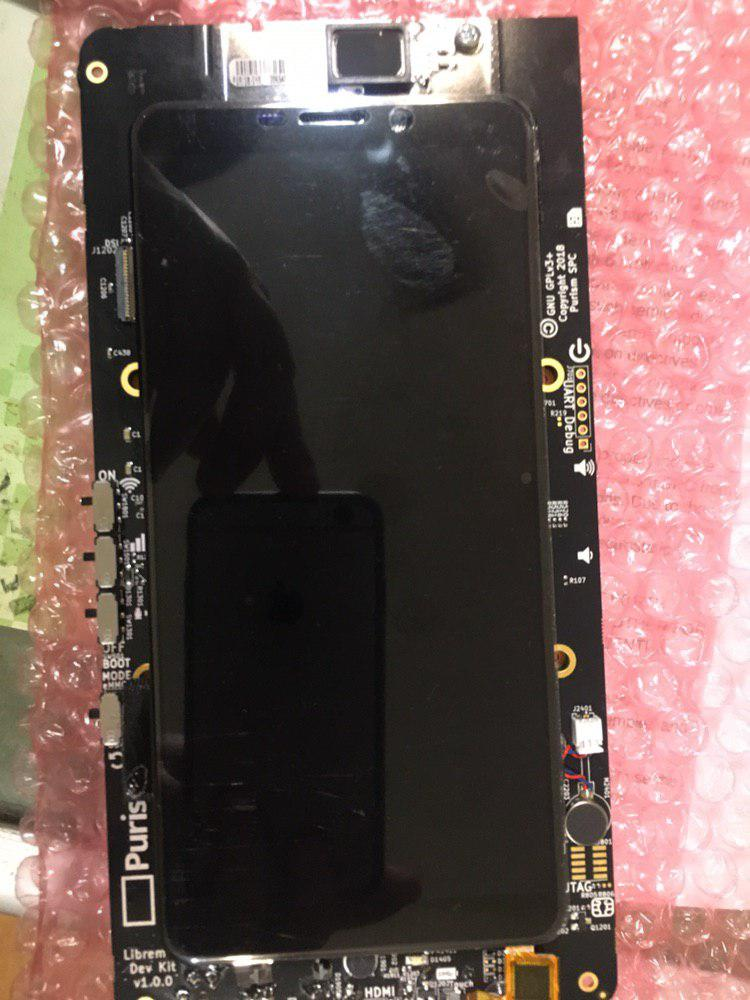
背面
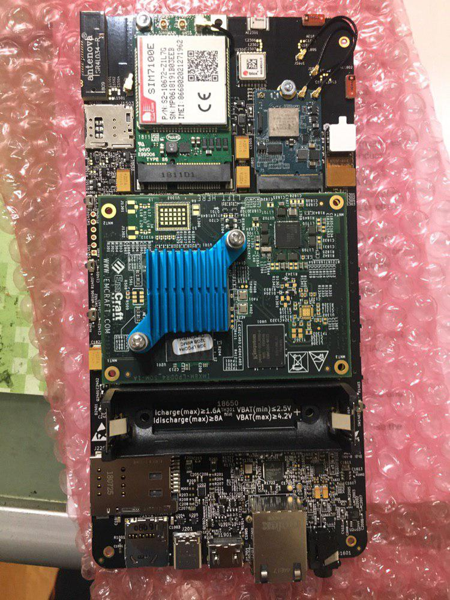
由於關於開發板的硬體，將在下一篇文章再介紹，因此先跳過講解吧 :P
除了開發板外，還提供了 USB type C 的線材，以及一個支援 QC 3.0 的 USB 電源
包裝
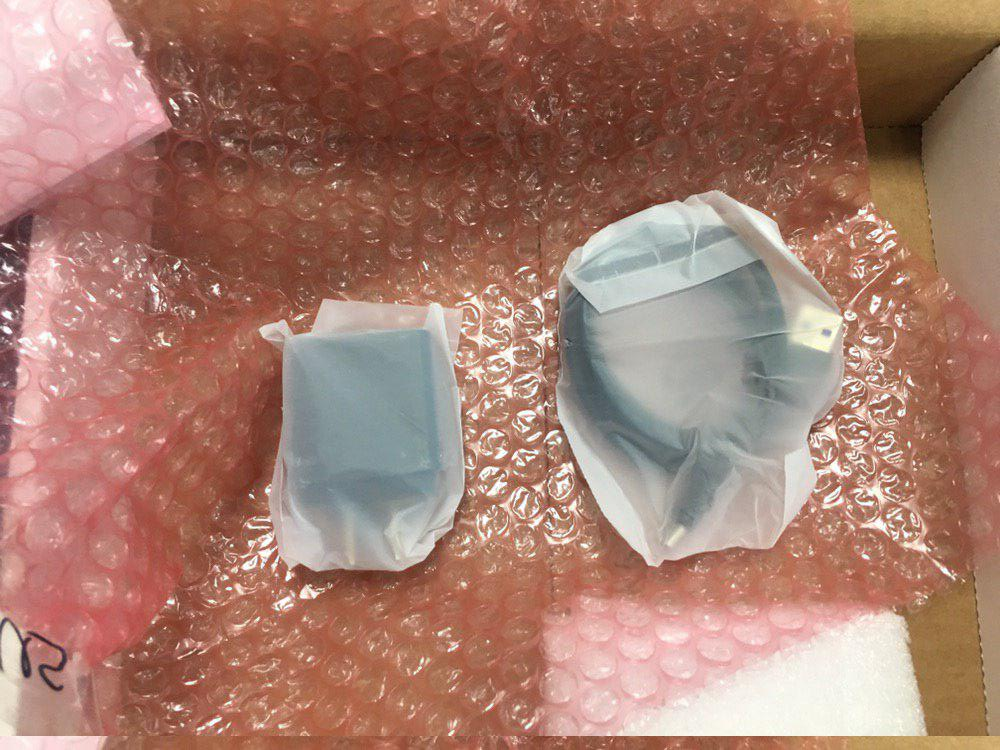
USB 電源
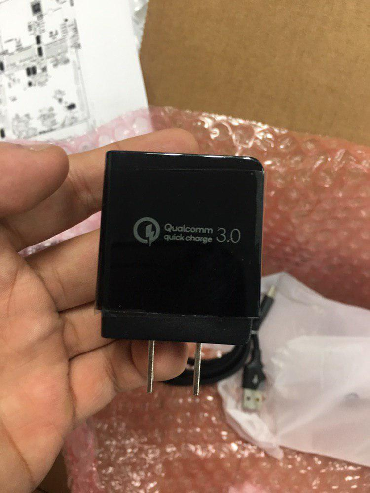
啟動板子
開完箱後，我快快樂樂的接上電源，然後……. 發現到螢幕不會亮 orz….
根據 Librem 5 Development Kit 的說明，由於目前驅動還沒搞好，因此板子上的螢幕還不會顯示…
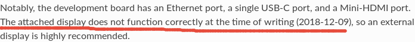
不過由於這一塊開發板有 Mini HDMI 接口，所以可能也可以從 Mini HDMI 看到輸出吧，但是筆者此時沒有相關線材，因此這邊要後面才能測試囉~
當然，就算沒有畫面顯示，只要能夠透過 UART 輸出就不用擔心拿到壞掉的板子啦，因此將 USB Type C 接到電腦上，並透過比如 tio 、 emacs 、 screen 等軟體打開 /dev/ttyACM0 來看看看有沒有訊息
我們可以用 root 作為 帳號 以及 密碼 來登入系統，或是用 purism 作為帳號，並輸入 123456 作為密碼來登入
coldnew@gentoo ~ $ tio /dev/ttyACM0 [tio 22:33:13] tio v1.31 [tio 22:33:13] Press ctrl-t q to quit [tio 22:33:28] Connected Debian GNU/Linux buster/sid pureos-test ttyGS0 pureos-test login: root Password:
目前筆者就先玩到這樣，接下來就是好好嗑一下硬體電路以及 i.MX8 的相關 CPU 手冊 ~
下一步
拿到這塊板子的下一步，當然是參與社群好好的玩玩看啦～
但不能忘記的是，先到 Librem 5 Development Kit 這邊看一下基本的使用說明，接下來則是到 https://source.puri.sm/Librem5 這個 puri.sm 的 GitLab 來看看相關更改，以及參與開發。